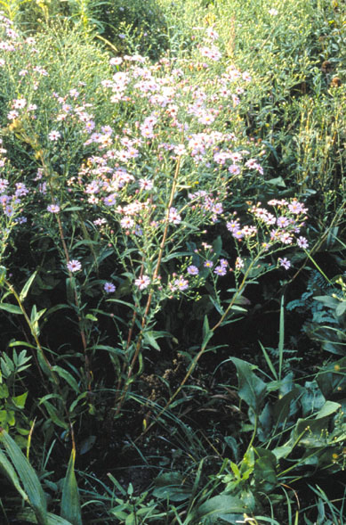
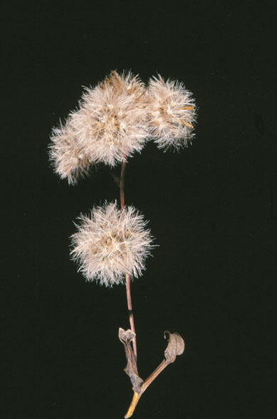
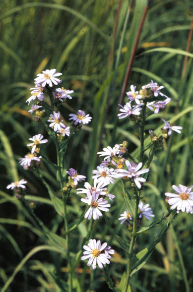
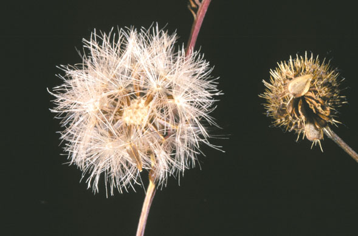

Aster Laevis
Family: Asteraceae
Smooth Blue Aster
Swink/Wilhelm #9



Click to view larger photo
FLOWERING: Early September to early October
SEED TIMING: Mid-October to November
HABITAT: Dry to wet prairie and wood edges
DIAGNOSTIC FEATURES: 1 - 3 feet. Leaves are smooth, mostly toothless, thick, stiffish, and partly encircle the stem. Flower is delicate, blue with yellow disk. There are many flower heads.
TO PICK: As with all Asters, each seed or achene has a cottony pappus attached. Entire head can be picked when one seed is fluffy. The rest will ripen in an open brown bag.